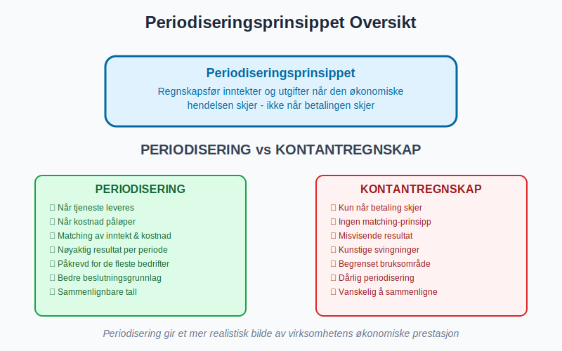
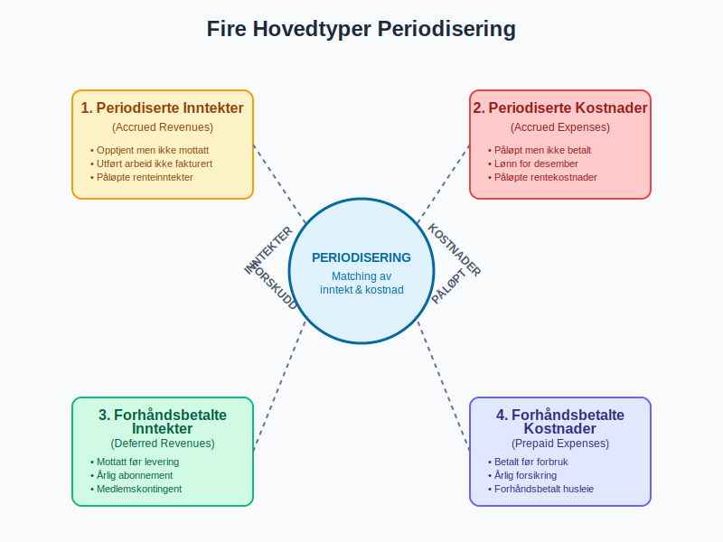
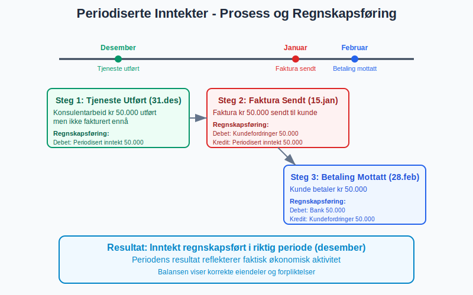
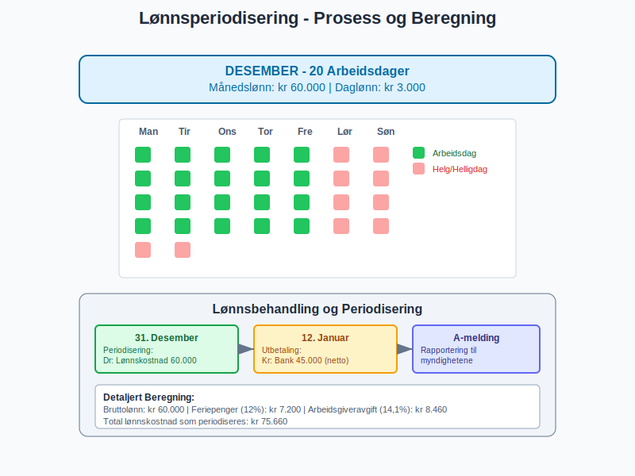
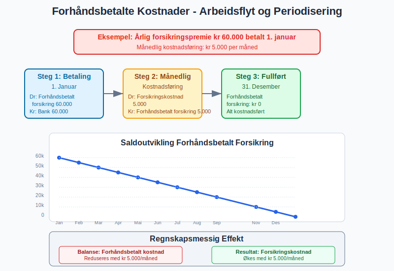
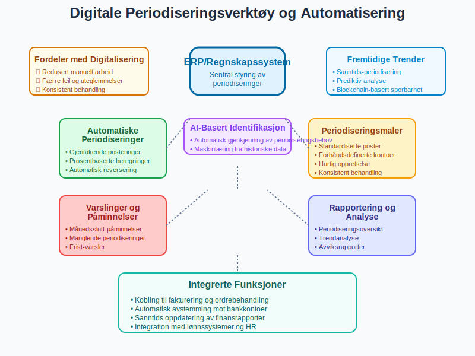
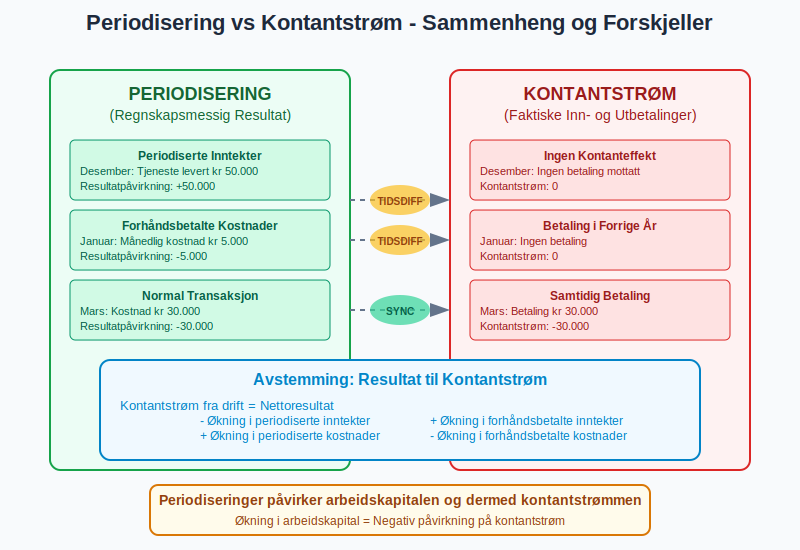
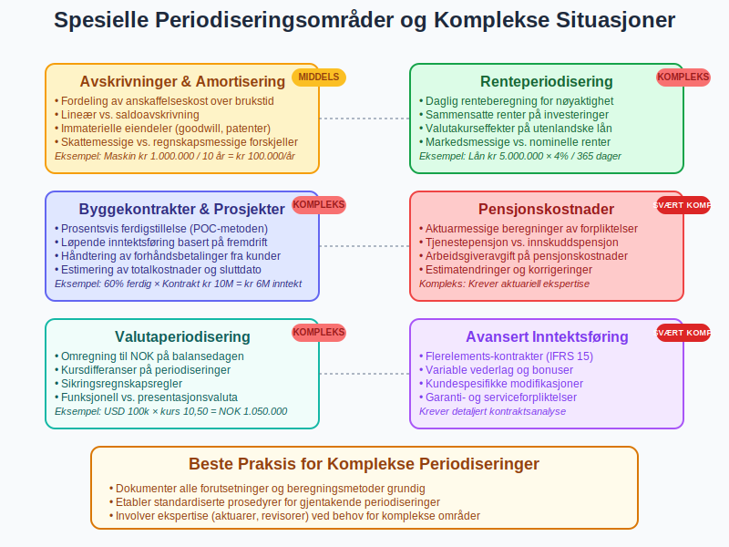
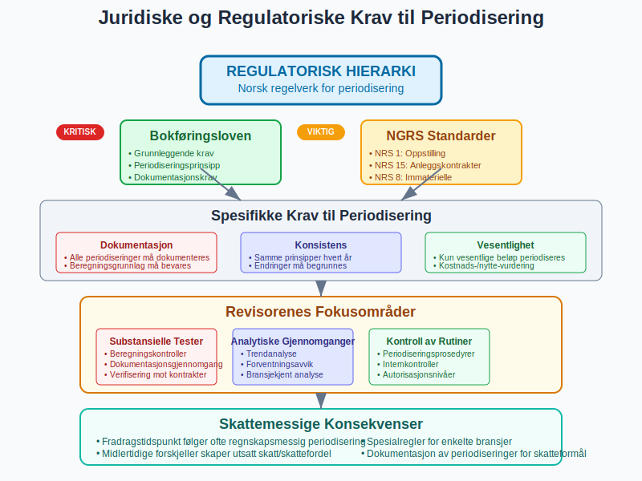
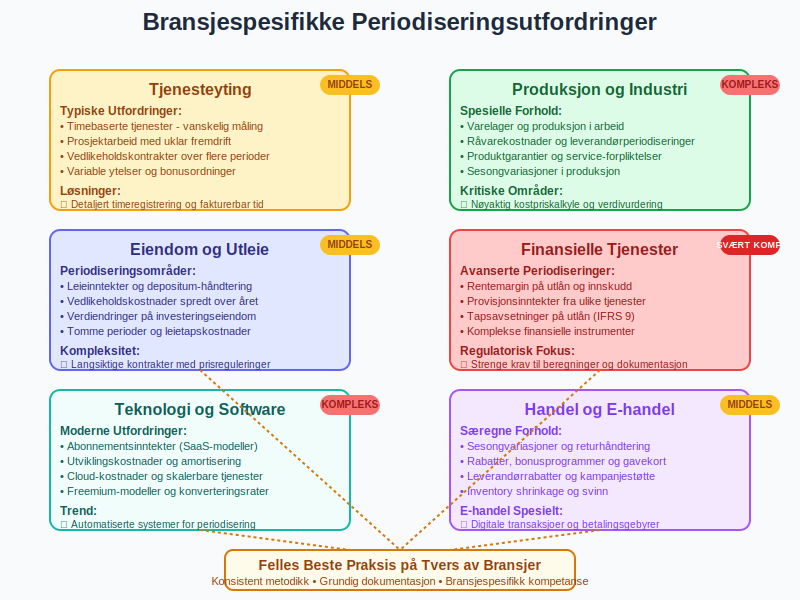

Periodisering er et av de mest fundamentale prinsippene i regnskapsføring som sikrer at alle inntekter og utgifter blir regnskapsført i riktig termin, uavhengig av når betalingen faktisk skjer. Dette prinsippet er hjørnesteinen i moderne regnskap og skiller seg fra kontantprinsippet ved å fokusere på når den økonomiske hendelsen oppstår, ikke når pengene skifter hender. Forståelse av korrekt terminplassering er essensielt for å anvende periodiseringsprinsippet på en måte som gir nøyaktige og sammenlignbare finansielle rapporter. Denne artikkelen gir en omfattende gjennomgang av periodiseringsprinsippet, dets praktiske anvendelse og betydning for nøyaktig finansiell rapportering.
For mer om avsetninger, se Avsetning.
For mer om hvordan feil periodisering og utilstrekkelige avsetninger kan føre til baksmell, se Baksmell.
Seksjon 1: Periodiseringsprinsippets Grunnlag
1.1 Definisjon og Kjernekonsept
Periodisering betyr at inntekter og utgifter skal regnskapsføres i den perioden de økonomisk tilhører, ikke nødvendigvis når betalingen skjer. Dette skaper et mer nøyaktig bilde av virksomhetens økonomiske prestasjon i hver periode.

1.2 De Fire Hovedkategoriene
Periodisering omfatter fire hovedtyper justeringer:
- Periodiserte inntekter: Inntekt opptjent men ikke mottatt
- Periodiserte kostnader: Kostnader påløpt men ikke betalt
- Forhåndsbetalte inntekter: Mottatt betaling for fremtidig levering
- Forhåndsbetalte kostnader: Betalt for fremtidige tjenester/varer

1.3 Periodisering vs. Kontantregnskap
| Aspekt | Periodiseringsregnskap | Kontantregnskap |
|---|---|---|
| Registreringstidspunkt | Når økonomisk hendelse skjer | Når betaling skjer |
| Resultatmåling | Mer nøyaktig per periode | Kan være misvisende |
| Kompleksitet | Høyere | Lavere |
| Lovkrav | Påkrevd for de fleste bedrifter | Tillatt for små bedrifter |
| Finansiell innsikt | Bedre periodisering | Begrenset periodisering |
Seksjon 2: Periodiserte Inntekter (Accrued Revenues)
2.1 Konsept og Identifikasjon
Periodiserte inntekter oppstår når virksomheten har opptjent inntekt gjennom å levere varer eller tjenester, men ennå ikke har mottatt betaling eller sendt faktura.
2.2 Vanlige Eksempler
- Renteinntekter: Renter opptjent på bankinnskudd som ikke er utbetalt
- Tjenesteinntekter: Utført arbeid som ikke er fakturert ennå
- Leieinntekter: Opptjent husleie for desember som betales i januar
- Bonusavtaler: Opptjente bonuser basert på årets prestasjon
2.3 Regnskapsføring av Periodiserte Inntekter
Periodisert inntekt (balansepost) DEBET
Inntektskonto (resultatpost) KREDIT
Eksempel: Et konsulentfirma har utført tjenester for kr 50.000 i desember som faktureres i januar:
Debet: Periodisert inntekt 50.000
Kredit: Konsulentinntekt 50.000
2.4 Oppfølging i Neste Periode
Når fakturaen sendes og betalingen mottas:
Debet: [Kundefordringer](/blogs/regnskap/hva-er-debitor "Hva er Debitor i Regnskap? Komplett Guide til Kundefordringer") 50.000
Kredit: Periodisert inntekt 50.000
Debet: Bank 50.000
Kredit: [Kundefordringer](/blogs/regnskap/hva-er-debitor "Hva er Debitor i Regnskap? Komplett Guide til Kundefordringer") 50.000

Seksjon 3: Periodiserte Kostnader (Accrued Expenses)
3.1 Definisjon og Anvendelse
Periodiserte kostnader er utgifter som virksomheten har pådratt seg men ennå ikke har mottatt faktura eller betalt for.
3.2 Typiske Periodiserte Kostnader
- Lønn og feriepenger: Opptjent lønn for desember utbetalt i januar
- Rentekostnader: Påløpte renter på lån
- Leverandørfakturaer: Mottatte varer/tjenester uten faktura
- Bonuser og overtidsgodtgjørelse
- Revisjonshonorar: Opptjent revisjon som faktureres senere
3.3 Regnskapsbehandling
Kostnadskonto (resultatpost) DEBET
Periodisert kostnad (balansepost) KREDIT
Eksempel: Påløpte rentekostnader på lån kr 15.000:
Debet: Rentekostnader 15.000
Kredit: Periodisert rentekostnad 15.000
3.4 Lønnsperiodisering - Spesielt Viktig
For virksomheter med månedlig lønnsutbetaling er lønnsperiodisering kritisk:
| Scenario | Desember Arbeid | Utbetaling | Periodisering |
|---|---|---|---|
| Normal månedslønn | 20 arbeidsdager | Januar | Periodiser hele desember |
| Feriepenger | Opptjent gjennom året | Juni neste år | Periodiser årlig opptjening |
| Pensjonskostnader | Månedlig opptjening | Varierende | Månedlig periodisering |

Seksjon 4: Forhåndsbetalte Inntekter (Deferred Revenues)
4.1 Begrepet Forskuddsinnbetaling
Forhåndsbetalte inntekter oppstår når virksomheten mottar betaling før varen eller tjenesten er levert. Dette skaper en forpliktelse til å levere i fremtiden.
4.2 Vanlige Eksempler
- Abonnementsinntekter: Årlig betaling for månedlig tjeneste
- Medlemskontingent: Forskuddsbetaling for neste års medlemskap
- Depositum: Forskuddsbetaling på fremtidig levering
- Gavekort: Forhåndsbetaling for fremtidige kjøp
- Forsikringspremier: Årlig premie for månedlig dekning
4.3 Regnskapsbehandling ved Mottak
Bank/Kontanter (aktivapost) DEBET
Forhåndsbetalt inntekt (gjeldspost) KREDIT
Eksempel: Mottatt kr 120.000 for 12 måneders tjeneste:
Debet: Bank 120.000
Kredit: Forhåndsbetalt inntekt 120.000
4.4 Løpende Inntektsførsel
Hver måned når tjenesten leveres:
Forhåndsbetalt inntekt (gjeldspost) DEBET
Tjenesteinntekt (inntektspost) KREDIT
Månedlig postering: kr 120.000 ÷ 12 = kr 10.000
Debet: Forhåndsbetalt inntekt 10.000
Kredit: Tjenesteinntekt 10.000

Seksjon 5: Forhåndsbetalte Kostnader (Prepaid Expenses)
5.1 Konsept og Anvendelse
Forhåndsbetalte kostnader er utgifter betalt på forhånd for varer eller tjenester som vil konsumeres over flere perioder.
5.2 Typiske Forhåndsbetalte Kostnader
- Forsikringspremier: Årlig betaling for månedlig dekning
- Husleie: Betalt husleie for fremtidige måneder
- Kontorrekvisita: Store innkjøp brukt over tid
- Programvarelisenser: Årlige lisenser med månedlig forbruk
- Markedsføringskampanjer: Forhåndsbetaling for fremtidig annonsering
5.3 Regnskapsbehandling ved Betaling
Forhåndsbetalt kostnad (aktivapost) DEBET
Bank/Kontanter (aktivapost) KREDIT
Eksempel: Betalt årlig forsikringspremie kr 60.000:
Debet: Forhåndsbetalt forsikring 60.000
Kredit: Bank 60.000
5.4 Månedlig Kostnadsførsel
Kostnadskonto (kostnadspost) DEBET
Forhåndsbetalt kostnad (aktivapost) KREDIT
Månedlig fordeling: kr 60.000 ÷ 12 = kr 5.000
Debet: Forsikringskostnad 5.000
Kredit: Forhåndsbetalt forsikring 5.000

Seksjon 6: Praktisk Implementering av Periodisering
6.1 Månedlig Periodiseringsprosess
En systematisk tilnærming til periodisering:
- Identifikasjon: Gjennomgå alle transaksjoner for å identifisere periodiseringsbehov
- Beregning: Bestem beløp som skal periodiseres
- Dokumentasjon: Lag klare beviser for alle periodiseringer
- Postering: Utfør regnskapspostene i systemet
- Oppfølging: Reverser eller juster i neste periode, som påvirker utgående balanse
6.2 Periodiseringssjekkliste
| Område | Sjekkliste |
|---|---|
| Inntekter | ☐ Utført arbeid ikke fakturert ☐ Opptjente renter ☐ Forskuddsbetalt fra kunder |
| Kostnader | ☐ Mottatte varer/tjenester uten faktura ☐ Påløpte lønnskostnader ☐ Rentebelastninger |
| Forskudd | ☐ Forhåndsbetalte forsikringer ☐ Forskuddsbetalt husleie ☐ Programvarelisenser |
6.3 Systemstøtte og Automatisering
Moderne regnskapssystemer tilbyr:
- Automatiske periodiseringer: Gjentakende månedlige posteringer
- Periodiseringsmaler: Standardiserte posteringer for vanlige situasjoner
- Varslinger: Påminnelser om nødvendige periodiseringer
- Rapporter: Oversikt over alle aktive periodiseringer

Seksjon 7: Periodisering og Kontantstrøm
7.1 Forskjellen Mellom Resultat og Kontantstrøm
Periodisering skaper forskjell mellom regnskapsmessig resultat og faktisk kontantstrøm:
| Poster | Påvirkning Resultat | Påvirkning Kontantstrøm |
|---|---|---|
| Periodiserte inntekter | Øker resultat | Ingen endring |
| Periodiserte kostnader | Reduserer resultat | Ingen endring |
| Forhåndsbetalte inntekter | Ingen endring | Øker kontantstrøm |
| Forhåndsbetalte kostnader | Ingen endring | Reduserer kontantstrøm |
7.2 Betydning for Arbeidskapital
Periodiseringer påvirker arbeidskapitalen direkte:
- Økning i periodiserte inntekter = Økning i omløpsmidler
- Økning i periodiserte kostnader = Økning i kortsiktig gjeld
- Forhåndsbetalte poster = Midlertidige endringer i arbeidskapital
7.3 Kontantstrømanalyse med Periodiseringer
For å forstå faktisk likviditet, må periodiseringer justeres ut av resultatet:
Justert Kontantstrøm fra Drift:
Nettoresultat
- Økning i periodiserte inntekter
+ Økning i periodiserte kostnader
+ Økning i forhåndsbetalte inntekter
- Økning i forhåndsbetalte kostnader
= Kontantstrøm fra driftsaktiviteter

Seksjon 8: Spesielle Periodiseringsområder
8.1 Avskrivninger som Periodisering
Avskrivninger er en form for periodisering av store investeringer:
- Anskaffelseskost fordeles over anleggsmidlets brukstid
- Månedlige avskrivninger sikrer jevn kostnadsbelastning
- Skattemessige avskrivninger kan avvike fra regnskapsmessige
8.2 Renteperiodisering
Kompleks renteberegning krever nøye periodisering:
- Daglig renteberegning for nøyaktige tall
- Sammensatte renter må håndteres korrekt
- Valutakursendringer på utenlandske lån
8.3 Byggekontrakter og Langsiktige Prosjekter
For store prosjekter brukes prosentsvis ferdigstillelse:
- Inntekt regnskapsføres basert på ferdigstillingsgrad
- Kostnader periodiseres løpende
- Forhåndsbetalinger fra kunder håndteres særskilt
8.4 Pensjonskostnader
Pensjonskostnader krever sofistikert periodisering:
- Aktuarmessige beregninger av fremtidige forpliktelser
- Arbeidsgiveravgift på pensjonskostnader
- Tjenestepensjon vs. folketrygd behandles forskjellig

Seksjon 9: Juridiske og Regulatoriske Aspekter
9.1 Bokføringsloven og Periodisering
Norsk bokføringslov krever:
- Periodisering av alle vesentlige poster
- Dokumentasjon av alle periodiseringer
- Konsistent anvendelse av periodiseringsprinsipper
- Tilstrekkelig bilagsdokumentasjon
9.2 Regnskapsstandarder (NGRS)
Norske regnskapsstandarder gir detaljerte retningslinjer:
- NRS 1: Oppstilling av regnskap - periodiseringskrav
- NRS 15: Anleggskontrakter - spesiell periodisering
- NRS 8: Goodwill og immaterielle eiendeler - amortisering
9.3 Revisorenes Rolle
Revisorer har spesiell fokus på periodiseringer:
- Substansielle tester av periodiseringsberegninger
- Analytiske gjennomganger av periodiseringstrender
- Kontroll av avstemminger og dokumentasjon
9.4 Skattemessige Konsekvenser
Periodiseringer påvirker skatteberegningen:
- Fradragstidspunkt følger ofte regnskapsmessig periodisering
- Forskjeller mellom regnskaps- og skattemessig behandling
- Utsatt skatt på midlertidige forskjeller

Seksjon 10: Vanlige Feil og Utfordringer
10.1 Typiske Periodiseringsfeil
| Feiltype | Beskrivelse | Konsekvens |
|---|---|---|
| Glemte periodiseringer | Ikke identifisert periodiseringsbehov | Feil resultat og balanse |
| Feil beløp | Beregningsfeil i periodisering | Unøyaktige finanstall |
| Feil periode | Periodisering i feil måned/år | Tidsforskjøvet resultatrapportering |
| Manglende reversering | Ikke reversert forrige periods periodisering | Dobbelt regnskapsføring |
| Dårlig dokumentasjon | Mangelfull begrunnelse | Revisjonsmerknader |
10.2 Kontrollrutiner for Periodisering
Månedlige kontroller:
- Gjennomgang av alle periodiseringskontroer
- Sammenligning med budsjett og tidligere perioder
- Kontroll av beregningsgrunnlag og satser
Årlige kontroller:
- Fullstendig gjennomgang av alle periodiseringer
- Vurdering av materialitet og vesentlighet
- Oppfølging av revisorenes merknader
10.3 Systembegrensninger og Løsninger
Vanlige utfordringer:
- Mangel på systemstøtte for komplekse periodiseringer
- Begrenset rapportering av periodiseringsdetaljer
- Vanskelig å spore historikk på periodiseringer
Anbefalte løsninger:
- Bruk av regneark som støttedokumentasjon
- Standardiserte periodiseringsmaler
- Kvartalsvis gjennomgang av alle periodiseringer

Seksjon 11: Avanserte Periodiseringsteknikker
11.1 Automatiserte Periodiseringer
Moderne systemer tilbyr sofistikerte løsninger:
- Gjentakende posteringer for faste månedlige beløp
- Prosent-baserte periodiseringer for variable kostnader
- Dato-drevne reverseringer for midlertidige poster
11.2 Periodisering i Konsernregnskap
For konsern kreves koordinert periodisering:
- Konsistente prinsipper på tvers av selskaper
- Elimineringseffekter av interne periodiseringer
- Valutaomregning av utenlandske periodiseringer
11.3 Justering for Prisendringer
Ved betydelige prisendringer:
- Indeksregulering av langsiktige kontrakter
- Valutakursjusteringer på utenlandske poster
- Renteendringer påvirker periodiseringsberegninger
11.4 Framtidig Utvikling
Kommende trender innen periodisering:
- AI-basert identifikasjon av periodiseringsbehov
- Sanntids-periodisering i regnskapssystemer
- Integrert kontantstrøm og periodiseringsrapportering

Seksjon 12: Bransjespesifikke Periodiseringer
12.1 Tjenesteytende Bedrifter
Periodisering i tjenestebransjen:
- Timebaserte tjenester: Periodisering av ikke-fakturerte timer
- Prosjektarbeid: Løpende inntektsføring basert på fremdrift
- Vedlikeholdskontrakter: Fordeling over kontraktsperioden
12.2 Produksjonsbedrifter
Spesielle utfordringer i produksjon:
- Varelager og produksjon i arbeid
- Råvarekostnader og leverandørperiodiseringer
- Produktgarantier og fremtidige servicekostnader
12.3 Eiendomsbransjen
Periodisering av eiendomstransaksjoner:
- Leieinntekter og deposita
- Vedlikeholdskostnader spredt over året
- Verdiendringer på investeringseiendom
12.4 Finansielle Tjenester
Kompleks periodisering i finanssektoren:
- Rentemargin på utlån og innskudd
- Provisjonsinntekter fra ulike tjenester
- Tapsavsetninger på utlån
12.5 Primærnæringer og Naturressurser
Spesielle periodiseringsutfordringer i naturressurssektoren:
- Skogbruk: Lange produksjonssykluser og tømmerkonto for inntektsutjevning
- Landbruk: Sesongmessige inntekter og avlingsprosesser
- Fiskeri: Varierende fangstresultater og markedspriser

Konklusjon
Periodisering er fundamentet for nøyaktig og pålitelig regnskapsføring som sikrer at finansielle rapporter gir et riktig bilde av virksomhetens økonomiske prestasjon og posisjon. Ved å skille mellom når økonomiske hendelser oppstår og når betalinger skjer, gir periodiseringsprinsippet en mer presis forståelse av virksomhetens faktiske lønnsomhet og finansielle helse.
Mastering av periodisering krever:
- Systematisk tilnærming til identifikasjon og beregning
- Grundig dokumentasjon av alle periodiseringsbeslutninger
- Konsistent anvendelse av prinsipper over tid
- Løpende kvalitetskontroll og oppfølging
For regnskapspersonell er periodisering ikke bare en teknisk øvelse, men et verktøy for å:
- Forbedre beslutningsgrunnlaget for ledelsen
- Sikre compliance med regelverk og standarder
- Bygge tillit hos investorer og kreditorer
- Støtte strategisk planlegging og budsjetting
Moderne teknologi gjør periodisering mer effektiv gjennom automatisering og systemstøtte, men den menneskelige vurderingen og profesjonelle skjønnet forblir essensielt for korrekt anvendelse av prinsippet.
Periodiseringer er spesielt kritiske under årsavslutning, hvor alle justeringsposter må være korrekt registrert for å sikre nøyaktige årsregnskap og overholdelse av regnskapsstandarder.
Periodisering er ikke bare et regnskapsteknisk krav, men en kritisk komponent for å forstå virksomhetens økonomiske rytme og sikre at alle interessenter får et korrekt og komplett bilde av virksomhetens finansielle status og utvikling over tid.